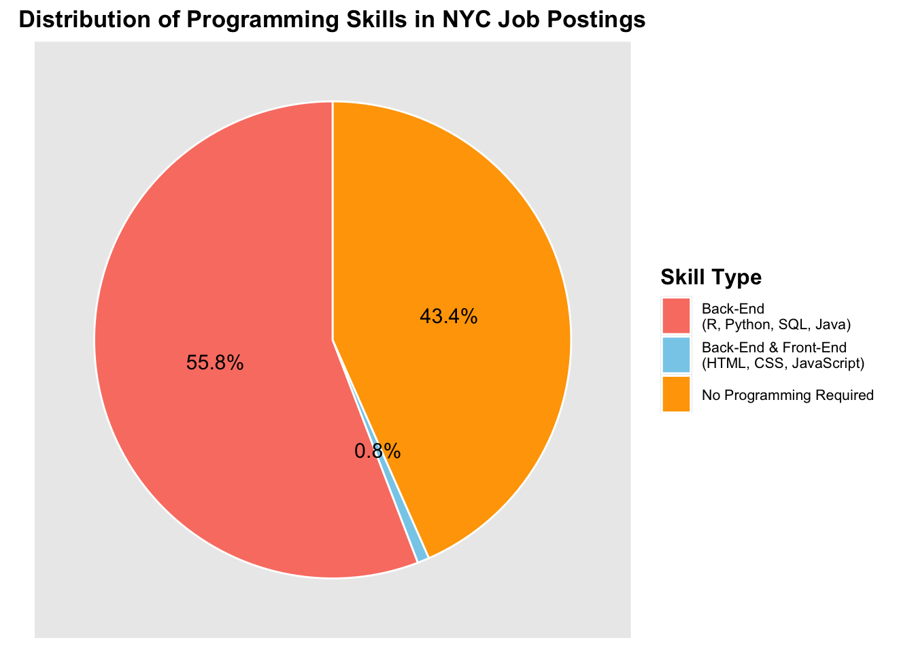
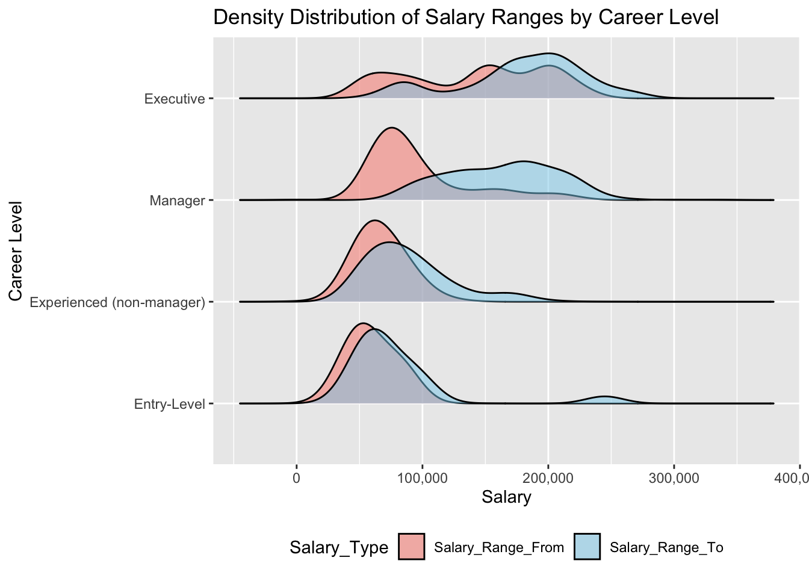

In this section, we aim to address the question: what factors influence job availability and salary? Answering this can help improve our chances of finding a satisfactory job. Specifically, we analyze the nyc_jobs dataset, which provides information about government job postings in New York City. Our exploration focuses on understanding the relationships between various factors, such as job category, career level, number of positions posted, and salaries. By examining these variables, we aim to better understand the current job market, particularly for individuals interested in pursuing government careers.
3.1 Data Preprocessing
3.1.1 Import
Code
library(tidyr)library(dplyr)
Attaching package: 'dplyr'
The following objects are masked from 'package:stats':
filter, lag
The following objects are masked from 'package:base':
intersect, setdiff, setequal, union
Code
library(ggplot2)library(ggridges)library(stringr)nyc_jobs <-read.csv("./Jobs_NYC_Postings.csv")# replace '.' with '_' in column namecolnames(nyc_jobs) <-gsub("\\.", "_", colnames(nyc_jobs))
We first import nyc_jobs dataset and relevent packages, and replace ‘.’ with ’_’ in column name.
From the Data section, we identified several columns with missing values. After evaluation, we determined that columns such as To_Apply, Post_Until, Work_Location_1, Hours_Shift, and Recruitment_Contact had too many missing values and were not critical to the objectives of this project. Therefore, we decided to remove them from the dataset to streamline our analysis.
Code
nyc_jobs <- nyc_jobs |>uncount(X__Of_Positions)
The column X__Of_Positions represents the number of positions posted for a job. To simplify the analysis, we used the uncount() function to expand the dataset. For example, if a job has 3 positions, the dataset will now include 3 identical rows for that job, representing each position individually.
3.2 Number of Job Position: what type of jobs are most available?
Code
ggplot(nyc_jobs, aes(x = Posting_Type, fill = Salary_Frequency)) +geom_bar(position ="dodge") +scale_fill_manual(values =c("salmon", "orange", "skyblue"), name ="Salary Frequency") +labs(title ="Comparison of External vs Internal by Salary Frequency",x ="Posting Type",y ="Count",fill ="Salary Frequency") +theme_grey(15)
In the context of government jobs, external jobs (open to the public) and internal jobs (restricted to city employees) have similar numbers. This is somewhat unexpected, as there is often talk about the ‘hidden job market’ within government roles. Most jobs are paid annually, followed by hourly and daily rates.
In this project, salaries are another key numerical variable. However, since this dataset does not include many specific information about daily or yearly working hours, we will focus exclusively on jobs that pay annually. Thus, we will only keep rows with Salary_Frequency is ‘Annual’.
3.3 What agency/department has the most job position?
Code
# check distribution of Agencyagency_counts <- nyc_jobs |>group_by(Agency) |>summarise(Number_of_Position =n()) |>arrange(desc(Number_of_Position))head(agency_counts)
# A tibble: 6 × 2
Agency Number_of_Position
<chr> <int>
1 DEPT OF ENVIRONMENT PROTECTION 1633
2 BRONX DISTRICT ATTORNEY 1153
3 DEPT OF HEALTH/MENTAL HYGIENE 1024
4 HRA/DEPT OF SOCIAL SERVICES 978
5 DEPARTMENT OF TRANSPORTATION 718
6 DEPT OF DESIGN & CONSTRUCTION 704
There are 63 distinct agencies, each with a corresponding number of job positions posted. Upon examining the data, we observe that the top 20 agencies have more than 50 job postings, which serves as a reasonable threshold. To simplify the analysis and reduce noise in future visualizations, we will merge agencies with fewer than 50 job postings since 2022 into an “Other” category.
We now reduced the number of agency to 21 (Top20 + Other), which improves the readability of graph as we can focus on major agencies.
The agency with the most job positions is the Department of Environmental Protection, as it is the top point in the dot plot with the largest count. This is reasonable given the increasing importance of environmental issues, such as climate change and sustainable development, which require a significant workforce to address effectively.
Following DEP, the Bronx District Attorney, the Department of Health/Mental Hygiene, and the HRA/Dept of Social Services also have significant job postings, each with around or above 1,000 positions. These are also reasonable as the Bronx District Attorney might manages a high volume of legal cases, which requires substantial staffing. The Department of Health/Mental Hygiene need to deal with public health challenges, while HRA/Dept of Social Services need to focuses on essential support services related to social welfare.
The “Other” category includes numerous small agencies that collectively account for a notable but less significant portion of the job postings.
3.3.1 Programming Languages Requirement vs. Number of Position: slightly higher proportion of job position require programming languages
programming_pie_data <- programming_summary |>mutate(Percentage = Count /sum(Count) *100)ggplot(programming_pie_data, aes(x ="", y = Percentage, fill = Programming_Category)) +geom_bar(stat ="identity", width =1, color ="white") +coord_polar("y", start =0) +labs(title ="Distribution of Programming Skills in NYC Job Postings",fill ="Skill Type" ) +scale_fill_manual(values =c("salmon", "skyblue", "orange"), name ="Skill Type") +theme_grey() +theme(axis.title.x =element_blank(),axis.title.y =element_blank(),panel.grid =element_blank(),axis.text =element_blank(),axis.ticks =element_blank(),plot.title =element_text(hjust =0.5, size =13, face ="bold"),legend.title =element_text(size =12, face ="bold"),legend.text =element_text(size =8),legend.key.height =unit(1.5, "lines") ) +geom_text(aes(label =paste0(round(Percentage, 1), "%")), position =position_stack(vjust =0.5), size =4, color ="black")

Bar chart and pie chart together show the distribution of job positions based on programming language requirements. We can see that a larger number (55.8% + 0.8% = 56.6%) of positions fall under the category of “Required Programming” compared to “No Programming Required(43.4%)” Among the positions requiring programming, the majority specify Back-End skills (55.8%) like R, Python, SQL, Java , with a smaller fraction (0.8%) requiring both Front-End and Back-End programming skills. Another insight is that there is no job only requiring Front-End programming skills. Thus, grasping common Back-End programming languages like python, c++ is necessary for seeking relevant government jobs.
This trend shows the increasing demand for programming skills, especially in back-end technologies, for government job postings. It also highlights the importance of technical skills in today’s job market.
3.4 Exploring Factors Influencing Salaries: Career Level, Job Category, and Programming Languages
Another variable that we are interested in is salaries. Specifically, we are want to learn about factors that contribute to higher salary. In the following section, we will explore the influence of candidates’ skill set, career level, job category on salary.
3.4.1 The distribution of salary is unbalanced and right skewed, indicating some positions have exceptionally high salary.
We first add Median_Salary to the dataset, which is calculated by median salary = (Salary_Range_From + Salary_Range_To) / 2, then check the distribution of Median_Salary
ggplot(nyc_jobs, aes(x = Median_Salary)) +geom_histogram(aes(y =after_stat(density)), bins =20, fill ="skyblue", color ="black", alpha =0.7) +geom_density(color ="salmon", size =1.2, adjust =2) +stat_function(fun = dnorm, args =list(mean =mean(nyc_jobs$Median_Salary, na.rm =TRUE),sd =sd(nyc_jobs$Median_Salary, na.rm =TRUE)),color ="steelblue",linewidth =1.2) +# Normal curvescale_x_continuous(labels = scales::comma,breaks =seq(0, max(nyc_jobs$Median_Salary, na.rm =TRUE), by =50000)) +labs(title ="Histogram of Median Salary with Density and Normal Curve",x ="Median Salary",y ="Density",caption ="Red line: Density Curve | Blue line: Normal Curve") +theme_minimal()
Warning: Using `size` aesthetic for lines was deprecated in ggplot2 3.4.0.
ℹ Please use `linewidth` instead.
The QQ plot shows that the distribution of Median Salary is not normal but right skewed. We can also confirm this idea from histogram of median salary with density curve(red) and normal curve(blue). The unbalanced distribution of median salary implies that we need to explore different variables that might potentially explain why salary varies a lot across different job position, and why the distribution is right skewed with long tails (i.e. job position with exceptionally high salary)
3.4.2 Higher careel level tends to have higher salary as well as higher variability in salary
Code
# Unique career levelscat("Career_Level includes:", paste(unique(nyc_jobs$Career_Level), collapse =", "), "\n")
After setting levels, Career_Level has levels: Entry-Level, Experienced (non-manager), Manager, Executive
Code
salary_data_long <- nyc_jobs |>select(Career_Level, Salary_Range_From, Salary_Range_To) |>pivot_longer(cols =c(Salary_Range_From, Salary_Range_To), names_to ="Salary_Type", values_to ="Salary")ggplot(salary_data_long, aes(x = Salary, y = Career_Level, fill = Salary_Type)) +geom_density_ridges(alpha =0.5, scale =0.8, bandwidth =15000) +scale_x_continuous(labels = scales::comma) +scale_fill_manual(values =c("salmon", "skyblue"), name ="Salary_Type") +labs(title ="Density Distribution of Salary Ranges by Career Level",x ="Salary",y ="Career Level",fill ="Salary Type" ) +theme_grey() +theme(legend.position ="bottom")

“Entry-level” and “Experienced (non-manager)” positions show relatively narrow salary distributions, with most salaries concentrated below $100,000. However, “Experienced (non-manager)” positions exhibit a slightly right-skewed ending salary distribution, indicating higher variability at the upper end. In contrast, “Manager” and “Executive” roles display significantly wider salary distributions. “Manager” salaries typically start between $50,000 and $100,000 and extend to around $100,000 to $200,000. At the “Executive” level, salaries are notably higher, with distributions heavily skewed toward the upper range, often surpassing $200,000.
Overall, “Entry-level” and “Experienced (non-manager)” roles tend to have more concentrated salary ranges, while “Manager” and “Executive” positions show higher salaries and greater variability.
Code
# Create a box plot for Median_Salary by Career_Levelggplot(nyc_jobs, aes(x = Career_Level, y = Median_Salary)) +geom_boxplot() +scale_y_continuous(labels = scales::comma) +labs(title ="Box Plot of Median Salary by Career Level",x ="Career Level",y ="Median Salary" ) +theme_grey() +theme(axis.text.x =element_text(angle =0, hjust =0.5))
This box plot provides a visual comparison of the Median_Salary across different career levels. It demonstrates that “Entry-Level” and “Experienced (non-manager)” positions have relatively concentrated salary ranges, with median salaries mostly below $100,000 and fewer outliers. In contrast, “Manager” and “Executive” positions exhibit much higher salary ranges and greater variability. Median salaries for “Manager” positions fall around $125,000, with IQRs extending higher and notable outliers pushing beyond $200,000. “Executive” roles, as expected, show the highest median salaries and the widest IQR, with 25% of the salaries data exceeding $200,000.
This pattern confirms the earlier conclusion that “Entry-Level” and “Experienced (non-manager)” position have lower salary and more concentrated salary distribution, while “Manager” and “Executive” roles not only offer higher pay but also greater variability in salary.
3.5 Job Category vs Salary: “Technology, Data & Innovation” has the highest median salaries, while “Building Operations & Maintenance” fall at the lowest end of the salary range
# A tibble: 6 × 2
Job_Category Count
<chr> <int>
1 Administration & Human Resources 297
2 Administration & Human Resources Building Operations & Maintenance 8
3 Administration & Human Resources Building Operations & Maintenance Poli… 2
4 Administration & Human Resources Communications & Intergovernmental Aff… 13
5 Administration & Human Resources Communications & Intergovernmental Aff… 1
6 Administration & Human Resources Communications & Intergovernmental Aff… 2
We see that there are 177 unique job category. As we look into the table, we discover that there are job categories with similar names, often structured as a main job category with the highest count and other minor job categories that share similar names but fall under different branches or combinations. For example, “Administration & Human Resources” appears as a standalone category with a significant number of postings, but variations such as “Administration & Human Resources Building Operations & Maintenance” and “Administration & Human Resources Communications & Intergovernmental Affairs” indicate subsets of the primary category under specific functional areas.
To simplify the analysis, we will merge the sub-job categories into their corresponding main job categories. For example, the above two variations will be merged under the main category “Administration & Human Resources.” This merging helps reduce redundancy so that we can have a more accurate representation of the overall job categories.
Code
# Merge job categoriesnyc_jobs <- nyc_jobs |>mutate(Merged_Job_Category =case_when(grepl("^Administration & Human Resources", Job_Category) ~"Administration & Human Resources",grepl("^Building Operations & Maintenance", Job_Category) ~"Building Operations & Maintenance",grepl("^Communications & Intergovernmental Affairs", Job_Category) ~"Communications & Intergovernmental Affairs",grepl("^Constituent Services & Community Programs", Job_Category) ~"Constituent Services & Community Programs",grepl("^Engineering, Architecture, & Planning", Job_Category) ~"Engineering, Architecture, & Planning",grepl("^Finance, Accounting, & Procurement", Job_Category) ~"Finance, Accounting, & Procurement",grepl("^Green Jobs", Job_Category) ~"Green Jobs",grepl("^Health", Job_Category) ~"Health",grepl("^Legal Affairs", Job_Category) ~"Legal Affairs",grepl("^Policy, Research & Analysis", Job_Category) ~"Policy, Research & Analysis",grepl("^Public Safety, Inspections, & Enforcement", Job_Category) ~"Public Safety, Inspections, & Enforcement",grepl("^Social Services", Job_Category) ~"Social Services",grepl("^Technology, Data & Innovation", Job_Category) ~"Technology, Data & Innovation",TRUE~ Job_Category # Default: keep original if no match ))merged_category_counts <- nyc_jobs |>group_by(Merged_Job_Category) |>summarise(Count =n()) |>arrange(desc(Count))merged_category_counts
# A tibble: 13 × 2
Merged_Job_Category Count
<chr> <int>
1 Engineering, Architecture, & Planning 1883
2 Legal Affairs 1872
3 Constituent Services & Community Programs 927
4 Health 843
5 Public Safety, Inspections, & Enforcement 729
6 Social Services 710
7 Administration & Human Resources 699
8 Technology, Data & Innovation 473
9 Finance, Accounting, & Procurement 379
10 Building Operations & Maintenance 333
11 Policy, Research & Analysis 191
12 Green Jobs 114
13 Communications & Intergovernmental Affairs 106
Now, we only have 13 distinct job categories, which would make later analysis much easier.
Code
ggplot(nyc_jobs, aes(x =reorder(Merged_Job_Category, Median_Salary, FUN = median), y = Median_Salary)) +geom_bar(stat ="summary", fun ="median", fill ="steelblue") +scale_y_continuous(labels = scales::comma) +labs(title ="Median Salary by Merged Job Category",x ="Merged Job Category",y ="Median Salary" ) +theme_grey() +theme(axis.text.x =element_text(angle =45, hjust =1, size=8))
The bar chart shows the median salary for different merged job categories. Categories like “Technology, Data & Innovation” has the highest median salaries, while categories like “Building Operations & Maintenance” fall at the lowest end of the salary range. This suggest that salary has to do with specific job category people choose.
3.5.1 Programming Language vs. Salary: Job requiring programming languages might associate with higher salary (salary >= $75,000)
salary_summary <- nyc_jobs |>mutate(Programming_Type =if_else( any_programming_required, "Required Programming", "No Programming Required" )) |>group_by(Programming_Type) |>summarise(Median_Salary =median(Median_Salary, na.rm =TRUE))ggplot(salary_summary, aes(x = Programming_Type, y = Median_Salary, fill = Programming_Type)) +geom_bar(stat ="identity", color ="black") +scale_y_continuous(labels = scales::comma) +scale_fill_manual(values =c("Required Programming"="salmon", "No Programming Required"="steelblue")) +labs(title ="Median Salary by Programming Requirement",x ="Programming Requirement",y ="Median Salary",fill ="Programming Type" ) +theme_minimal() +theme(axis.text.x =element_text(angle =0, hjust =0.5),plot.title =element_text(hjust =0.5, face ="bold", size =14) )
The mosaic graph shows that salaries is clearly influenced by whether programming skills are required. Jobs requiring programming are more likely to offer higher salaries(salary >= $75,000), while jobs that do not require programming tend to cluster around lower salary ranges(salary < $75,000). This supports the conclusion that salary is dependent on knowing programming languages.
The bar chart also confirm this idea as jobs not requiring programming languages has median salary below $70,000, while jobs that require programming languages has median salary about $78,000.
This finding aligns with our earlier conclusion that “Technology, Data & Innovation” has the highest median salaries